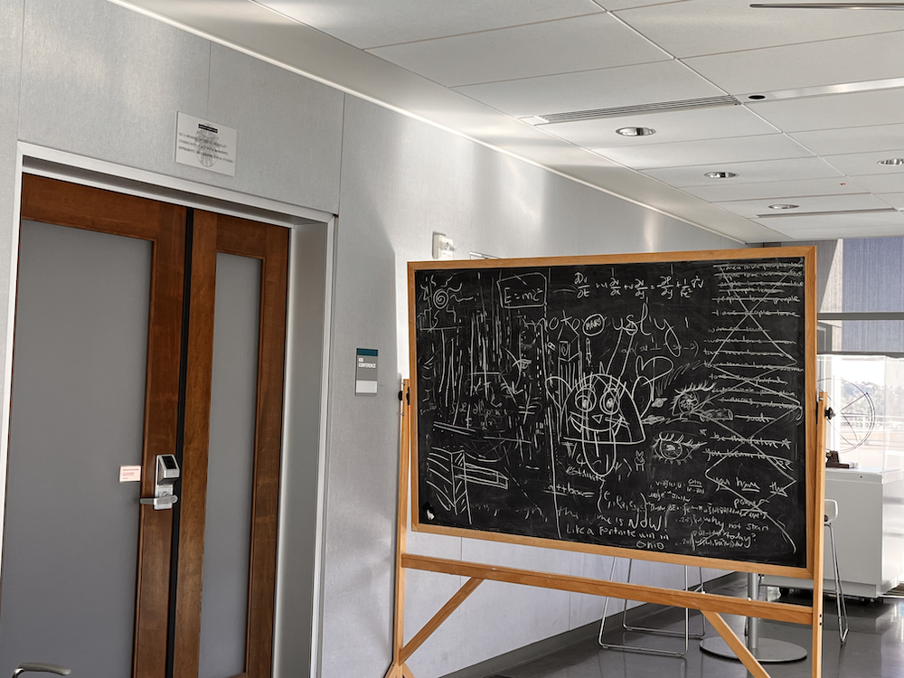

Rebecca Feng


|

|

|

|
Part A: Image Warping and Mosaicing
Recovering Homographies
We need to define a homography matrix H in order to warp the perspective of a given image. This is done by manually defining four correspondence points in our original image, then an associating four corrrespondence points in the desired warped image. The homography matrix has 8 free variables. For 2D images, the homography matrix is a 3 by 3 matrix where:
and the free variables are given from letters a to h. Mathematically, we would like to apply H to a given coordinate in our original image, (x,y), to a coordinate in our final image, (x', y') , where:
Expressing free variables a through h as a vector,
We can solve for what variables a through h are, if we have four correspondence points; We can stack those correspondence points on the right hand matrix representing the coordinate buffer. The matrix is invertible, and we can uniquely define variables a through h if the right hand buffer is a square matrix (8 by 8). We can also define more correspondence points as needed, and perform least-squares to determine the best a through h values.
For least squares, we have an n by 8 right hand side matrix A (where n is 2 times number of correspondence points to account for the x and y coordinates), and a resulting vector B with dimensions n by 1, representing the transformed coordinates. We can solve for the vector representing H's free variables a through h, denoted as H', as follows:
And determine the parameters of H this way.
Image Rectification and Warping
We can apply H to the corners of our image and warp the entire image to the new perspective grid. Once we get the positions of the corners of our warped image, we then come up with an inverse H in order to sample points from our original image, using a bilinear interpolation sampling method in order to ensure antialiasing (speciially, scipy's griddata).
If, upon applying H to the corners of our original image, the warped image's corners have negative values, then we would have to shift the image up, so that the top left corner rests at image coordinates (0,0).
Here are some results of warping each image to a new perspective grid, so that it would appear to the viewer that we are looking face-on at something in the image. I drew the temple a while back!

|

|

|

|

|

|
Image mosaicking
We can apply the previous idea multiple times to different images to warp each image's correspondence points to another image's correspondence points. For example, we can define common correspondence points at the corners of the blackboard in order to stack each warped image in the set of images, one-by-one.
In my implementation, I warped each image on top of another one by one. Image 2's was warped onto Image 1 by finding H transforming Image 2's correspondence points to Image 1's correspondence points. Then, we can stack together the images and blend them using a distance mask, and multi-band pass filtering described in project 2. Then, I warp Image 3's correspondence points onto Image 1 and 2's correspondence points (which should be in the same position as before, but shifted due to resizing the image when merging the warped image with the original), and so on.
For multiresolution blending, we must input the two images in their respective positons in
the final image buffer, and a mask to blend the two images together.
In order to compute the mask, we need to determine a good line between the two images
intersecting each other.
For each image, we can first apply a bwdist
filter. The Python equivalent of this is
scipy's Euclidean distance transform method.
Afterwards, we compare the two image buffers to see at which positions in the array that the
1st image has a higher bwdist value than the second image. In other words,
image1bwdist > image2bwdist gives us a boolean buffer that we can convert to
a float buffer (for computation), where a particular pixel given a coordinate in the image
buffer is black if image1's bwdist at that coordinate has a higher pixel value than image2's
bwdist.
The float buffer will be the mask that we will pass into the multiresolution blending function, in order to blend our two images together.
Here are some results, as well as the input images:
|
|

|

|
Campbell hall
|
|
|
|
|
Flowers on my desk

|

|

|
Joe

|

|
There are some slight artifacting issues due to the camera being slightly out of position when taking photos, as well as different levels of automatic exposure and lighting when taking photos at various angles. Multiresolution blending helped greatly with blending two images with different lighting conditions. Additionally, the slight black, blurred border in the mosaicked images are a byproduct of the laplacian and gaussian stacking, and that pixel values outside of the warped image in the final image buffer are black. I used a blur factor as small as possible to minimize the noticeability of the black borders, but large enough to seamlessly blend two warped images together in the colored portions.
Bells and Whistles
Here are some creative results! I computed the H needed to warp the drawing onto the blackboard, and overlayed the two images together:

|  |

|

|